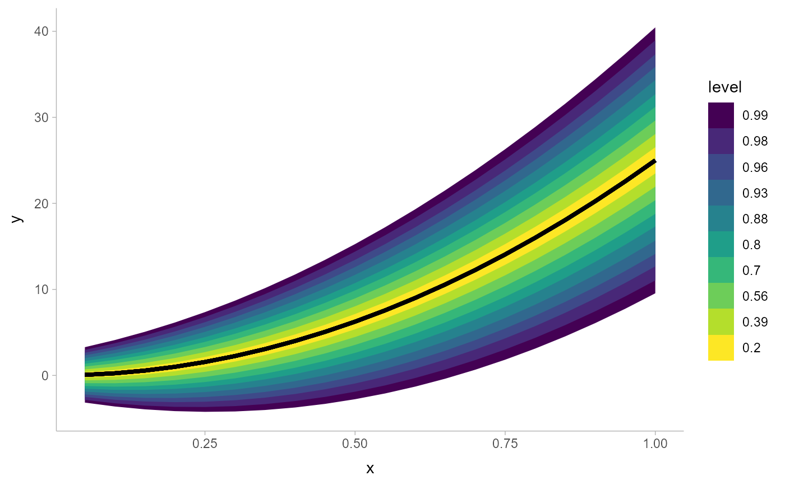
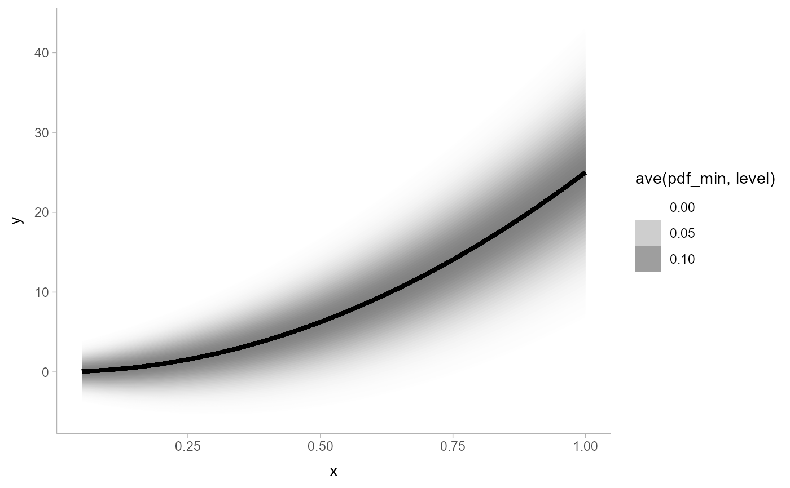

Create nicely-spaced sets of nested interval widths for use with (e.g.)
the .width parameter of point_interval(), stat_slabinterval(), or
stat_lineribbon():
interval_widths(n)creates a sequence ofninterval widths \(p_1 \ldots p_n\), where \(0 < p_i \le \textrm{max} < 1\), corresponding to the masses of nested intervals that are evenly-spaced on a reference distribution (by default a Normal distribution). This generalizes the idea behind the default ~66% and 95% intervals instat_slabinterval()and 50%, 80%, and 95% intervals instat_lineribbon(): when applied to a Normal distribution, those intervals are roughly evenly-spaced and allow one to see deviations from the reference distribution (such as excess kurtosis) when the resulting intervals are not evenly spaced.pretty_widths(n)is a variant ofinterval_widths()with defaults formaxandprecisionthat make the resulting intervals more human-readable, for labeling purposes.
Intervals should be evenly-spaced on any symmetric reference distribution
when applied to data from distributions with the same shape. If dist
is not symmetric, intervals may only be approximately evenly-spaced above the
median.
Usage
interval_widths(n, dist = dist_normal(), max = 1 - 0.1/n, precision = NULL)
pretty_widths(
n,
dist = dist_normal(),
max = if (n <= 4) 0.95 else 1 - 0.1/n,
precision = if (n <= 4) 0.05 else 0.01
)Arguments
- n
<numeric> in \([0, \infty)\): Number of intervals to generate.
- dist
<distribution>: Reference distribution.
- max
<numeric> in \((0, 1)\): Maximum interval width.
- precision
<numeric | NULL>: If not
NULL, a value in \((0, 1)\) giving the precision to round resulting widths to. In order to guaranteenunique intervals are returned, widths will only be rounded if the result does not create duplicate values.
Value
A length-n numeric vector of interval widths (masses) between
0 and 1 (exclusive) in increasing order.
Details
Given the cumulative distribution function \(F_\textrm{dist}(q)\)
and the quantile function \(F^{-1}_\textrm{dist}(p)\) of dist, the
following is a sequence of \(n + 1\) evenly-spaced quantiles of dist
that could represent upper limits of nested intervals, where
\(q_i = q_0 + i\frac{q_n - q_0}{n}\):
$$\begin{array}{rcl} q_0, \ldots, q_n &=& F^{-1}_\textrm{dist}(0.5), \ldots, F^{-1}_\textrm{dist}(0.5 + \frac{\textrm{max}}{2}) \end{array}$$
interval_widths(n) returns the n interval widths corresponding to the
upper interval limits \(q_1, \ldots, q_n\):
$$ 2\cdot\left[F_\textrm{dist}(q_1) - 0.5\right], \ldots, 2\cdot\left[F_\textrm{dist}(q_n) - 0.5\right] $$
See also
The .width argument to point_interval(), stat_slabinterval(),
stat_lineribbon(), etc.
Examples
library(ggplot2)
library(distributional)
interval_widths(1) # 0.9
#> [1] 0.9
# this is roughly +/- 1 SD and +/- 2 SD
interval_widths(2) # 0.672..., 0.95
#> [1] 0.672905 0.950000
interval_widths(3) # 0.521..., 0.844..., 0.966...
#> [1] 0.5218917 0.8440126 0.9666667
# "pretty" widths may be useful for legends with a small number of widths
pretty_widths(1) # 0.95
#> [1] 0.95
pretty_widths(2) # 0.65, 0.95
#> [1] 0.65 0.95
pretty_widths(3) # 0.50, 0.80, 0.95
#> [1] 0.50 0.80 0.95
# larger numbers of intervals can be useful for plots
ggplot(data.frame(x = 1:20/20)) +
aes(x, ydist = dist_normal((x * 5)^2, 1 + x * 5)) +
stat_lineribbon(.width = pretty_widths(10))

# large numbers of intervals can be used to create gradients -- particularly
# useful if you shade ribbons according to density (not interval width)
# (this is currently experimental)
withr::with_options(list(ggdist.experimental.slab_data_in_intervals = TRUE), print(
ggplot(data.frame(x = 1:20/20)) +
aes(x, ydist = dist_normal((x * 5)^2, 1 + x * 5)) +
stat_lineribbon(
aes(fill_ramp = after_stat(ave(pdf_min, level))),
.width = interval_widths(40),
fill = "gray50"
) +
theme_ggdist()
))
